Proslava ob državnem prazniku dnevu Rudolfa Maistra
Člani Društva general Rudolf Maister Kranj, predstavniki Mestne občine Kranj, predstavniki dijakov in učiteljev s kranjske Gimnazije in ostali, ki so se odzvali vabilu, smo se ob državnem prazniku – dnevu Rudolfa Maistra tudi letos s proslavo na Maistrovem trgu poklonili njegovemu spominu, prostovoljcem borcem za severno mejo ter Mihajlu Pupinu Idvorskemu, ki je na pariški mirovni konferenci posredoval pri ameriškem predsedniku T. W. Wilsonu, da je jeseniški trikotnik ostal v slovenskih rokah.
Vsem srednjim šolam in osnovnim šolam v Mestni občini Kranj in osnovnim šolam v občinah Naklo, Preddvor, Šenčur in Cerklje smo predlagali, da se proslave udeležijo delegacije učencev v spremstvu učiteljev. Povratnih informacij žal od nobene šole nismo dobili. Proslave se je udeležila le delegacija učencev Osnovne šole Orehek v spremstvu ravnatelja, kateremu smo se po proslavi tudi osebno zahvalili za udeležbo. Boljši odziv osnovnih in srednjih šol pričakujemo v naslednjem, Maistrovem letu.
Kot vedno doslej, je kulturni program in udeležbo dijakov na proslavi zagotovila Gimnazija Kranj.
Na začetku proslave sta pod doprsni kip Rudolfa Maistra na hiši, kjer je živel s starši in bratoma položila lovorov venec podžupan Mestne občine Kranj Janez Černe in podpredsednik društva dr. Iztok Purič. Podžupan je navzoče tudi pozdravil s kratkim nagovorom.
Slavnostni govornik je bil predsednik Društva general Rudolf Maister Kranj Roman Nahtigal. V govoru je najprej predstavil dogodke od ustanovitve Države SHS 29. 10. 1918 do imenovanja Maistra za generala in razorožitve nemške zelene garde, dne 23. 11. 1918. Potem je na kratko predstavil Maistrova mlada leta in šolanje, pomen njegove žene Marije Stergar, njegovo vojaško pot do upokojitve in njegove aktivnosti v pokoju. Poudaril je, da Maister ni bil le vojaški poveljnik, ampak predvsem tudi velik domoljub, pa pesnik, slikar, ljubitelj knjig in organizator kulturnega življenja.
Opomnil je, da bi se na avstrijskem Koroškem zgodba na ozemljih, ki so jih poseljevali Slovenci, verjetno končala drugače, kot se je, če bi bila vlada Države SHS odločnejša. Citiral je misel Ivana Hribarja, slovenskega bančnika, liberalnega politika, ljubljanskega župana, diplomata in publicista, ki je v drugi knjigi spominov zapisal: »Da smo Koroško zasedli, bila bi nam ostala brez plebiscita.«
Prisotne je spomnil, da je bil nacionalni obstoj slovenskega naroda po koncu prve svetovne vojne še bolj ogrožen kot znotraj Avstro-Ogrske monarhije. Ustanovitev Države SHS je zato pomenila osvoboditev jezikovnega zatiranja in potrditev državotvornosti slovenskega naroda.
Po razpadu Avstro-Ogrske monarhije je bilo za slovenski narod najpomembnejše vprašanje, kje bo potekala meja njegove novo ustanovljene države. Boj za določitev državne meje na Koroškem je trajal skoraj dve leti in je potekal najprej na bojnem, nato pa še na diplomatskem polju.
Ob dnevu Rudolfa Maistra na Gorenjskem ne smemo pozabiti Alfreda Lavriča, vrhovnega poveljnika pri obrambi slovenske meje na zahodnem Koroškem, poročnikov Janka Vilmana in Aleksandra Lunačka z Jesenic, poročnika Lojzeta Udeta in ljubeljske skupine prostovoljcev iz Tržiča, alpinista Rudolfa Badjure in Alpske čete prostovoljcev z Jesenic in Radovljice ter nadporočnika Karla Šefmana iz Kranjske gore in pomena njegove čete za ohranitev jeseniškega trikotnika.
Hvaležni moramo biti tudi znamenitemu srbsko-ameriškemu znanstveniku Mihajlu Pupinu–Idvorskemu, matematiku, fiziku in velikemu izumitelju mednarodnega slovesa, častnemu občanu Bleda od leta 1921, ki se je leta 1919 na povabilo Kraljevine SHS udeležil pariške mirovne konference. Na njej je Italija postavila diplomatsko zahtevo, da jeseniški trikotnik skupaj z Jesenicami, Gorjami, Bledom, Ribnim in Bohinjem iz strateških interesov pripada njej za neprekinjeno zvezo tržaškega pristanišča z nemško Avstrijo in Češko. To bi se skoraj zgodilo, če ne bi Pupin, ki je bil sošolec in prijatelj ameriškega predsednika Thomasa W. Wilsona, z intervencijo pri njem to preprečil. Bil je na pravem mestu, ko smo ga Slovenci najbolj potrebovali. Pomagal nam je ohraniti pomemben del našega narodnega ozemlja.
Na koncu je govor zaključil z verzom jeseniškega novinarja, pisatelja in pesnika Miha Klinarja, ki je zapisal: »ČE V ONEM ČASU NE BILO BI NAS, ŠE VEČJI KOS SLOVENSKE ZEMLJE BI ODTRGAL TUJI PLAZ«
Po končanem slavnostnem govoru so dijaki Gimnazije Kranj z mentorjema prof. Ano Žunič in prof. Erikom Šmidom pripravili kratek kulturni program. Dijak Martin Černe je najprej recitiral zanosno, borbeno in vitalistično obarvano Maistrovo pesem Naprej. Za njim je nastopil trio flavt, ki so ga sestavljale dijakinje Rebeka Pavlin, Špela Šimnic in Marcela Oblak. Zaigrale so skladbo Barta Bakkerja z naslovom Buenos dias muchachas. Dijakinja Sara Andrejc je recitirala lirsko-epsko pesem z naslovom Mati, v kateri ob slavju ob vojaški zmagi Maister postavi globoka bivanjska razmišljanja, ki jih izpoveduje lik matere. Robežnikovo skladbo Orion v priredbi Jožeta Privška sta na koncu kulturnega programa zaigrala dijaka Jure Osterman na evfoniju in Jaša Luštrek na kitari.
Program proslave je povezovala dijakinja Lara Jelić.
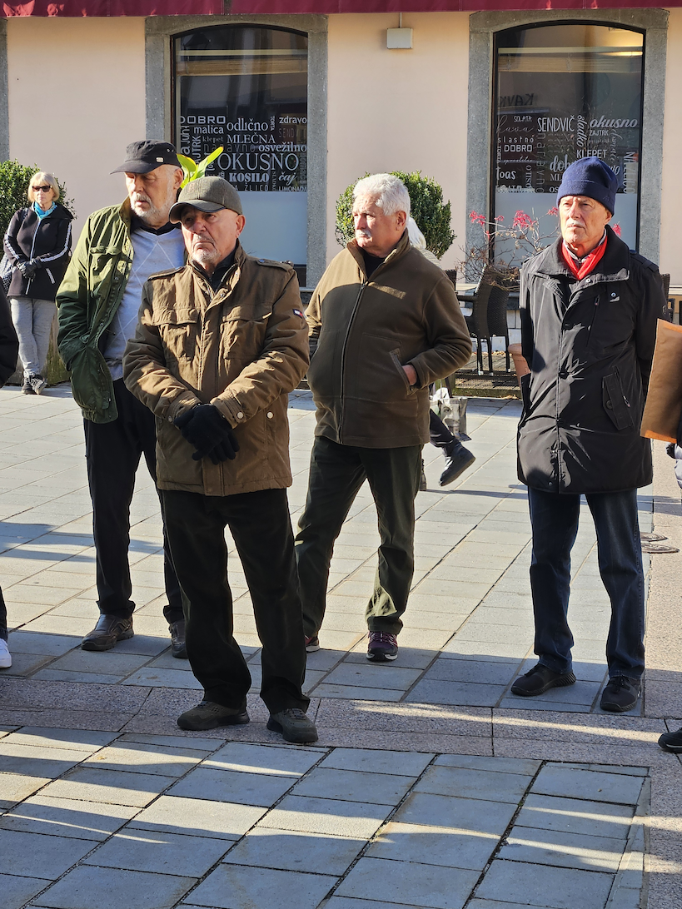
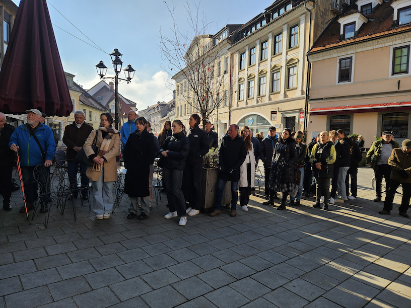
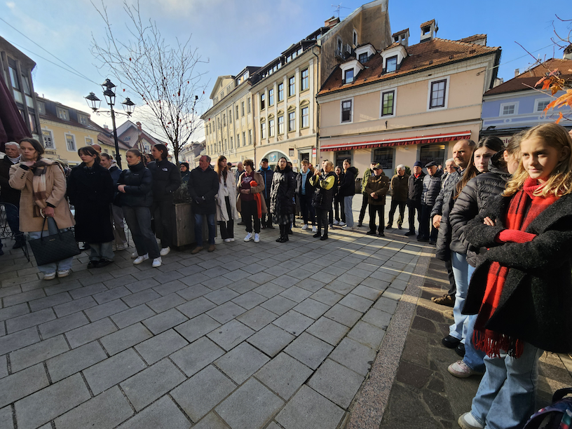
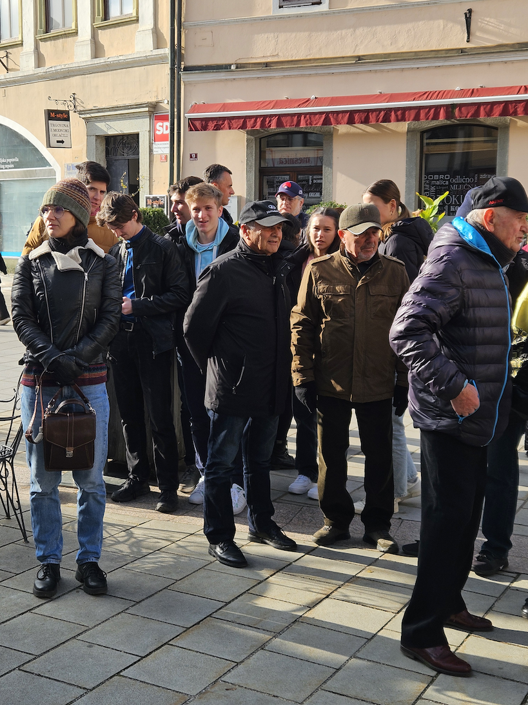
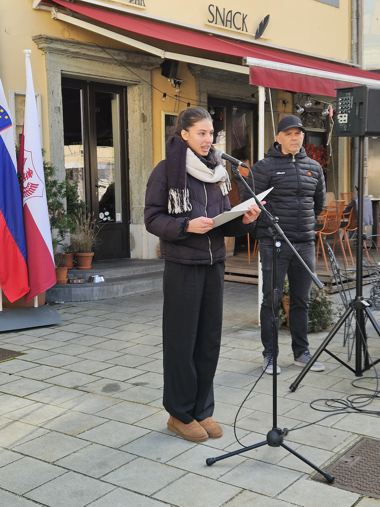 Program proslave je povezovala dijakinja Lara Jelić.
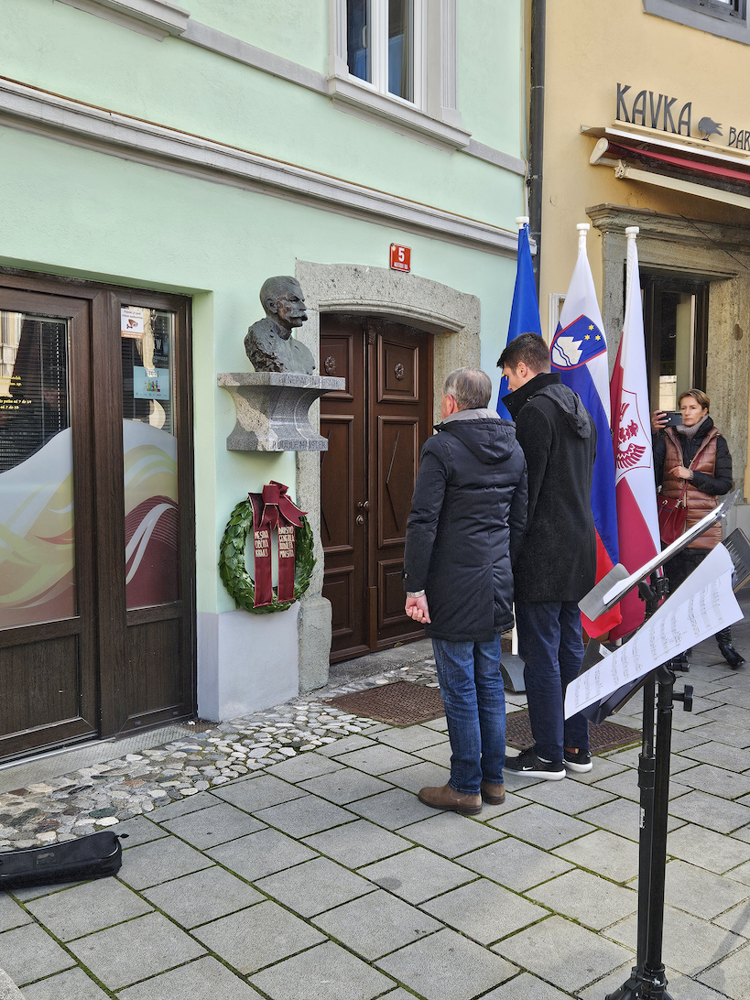 Podžupan Mestne občine Kranj Janez Černe in podpredsednik DGRM Kranj dr. Iztok Purič sta pod doprsni kip Rudolfa Maistra položila lovorov venec.
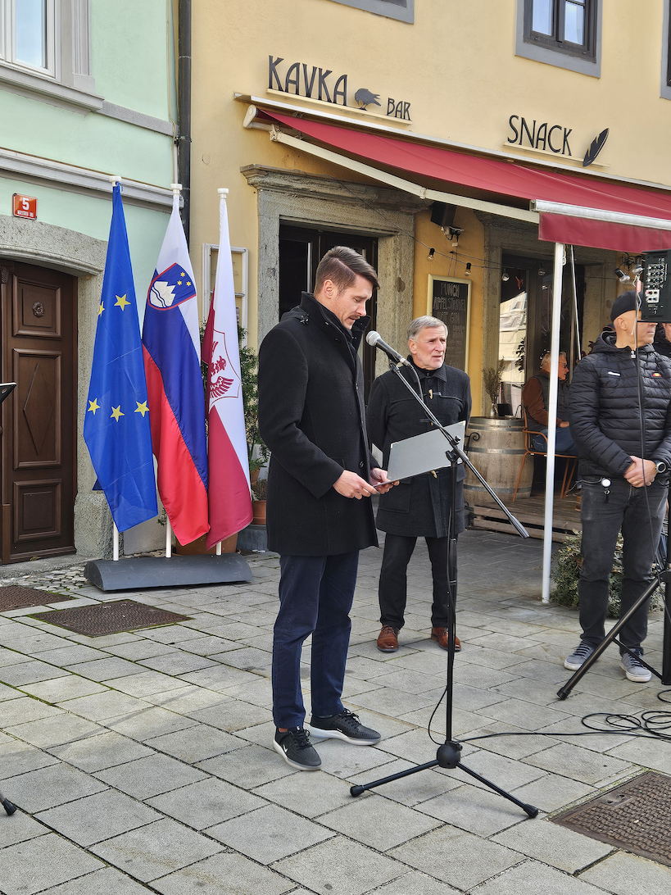 Podžupan je navzoče pozdravil s kratkim govorom.
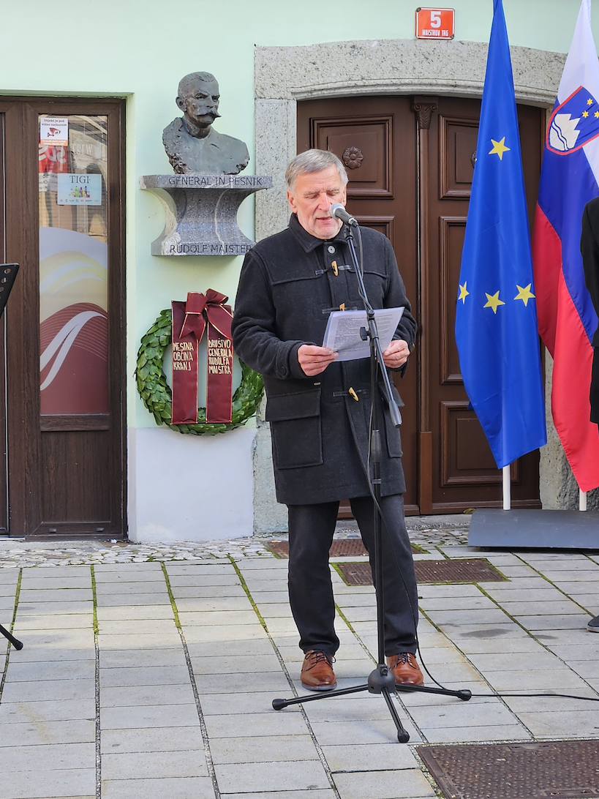 Slavnostni govornik je bil predsednik DGRM Kranj Roman Nahtigal.
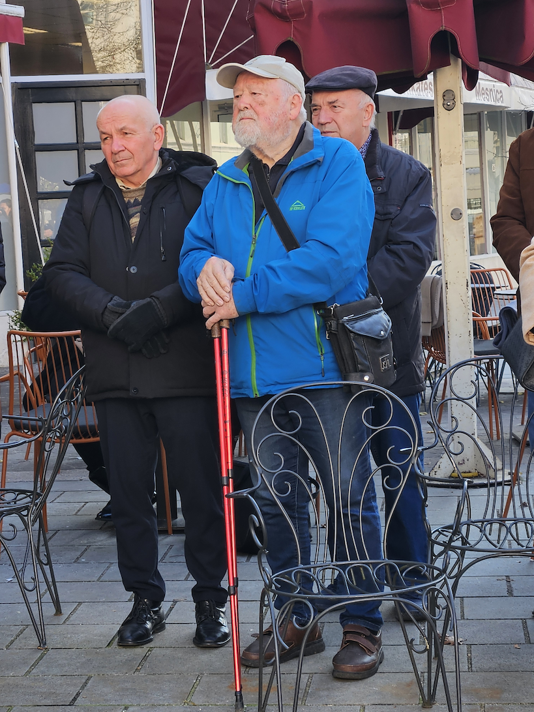 Veselilo nas je, da se je proslave udeležil tudi starosta DGRM Kranj mag. Štefan Kadoič, nekdanji kranjski podžupan in direktor VŠOD ter do upokojitve predavatelj na FOV Kranj.
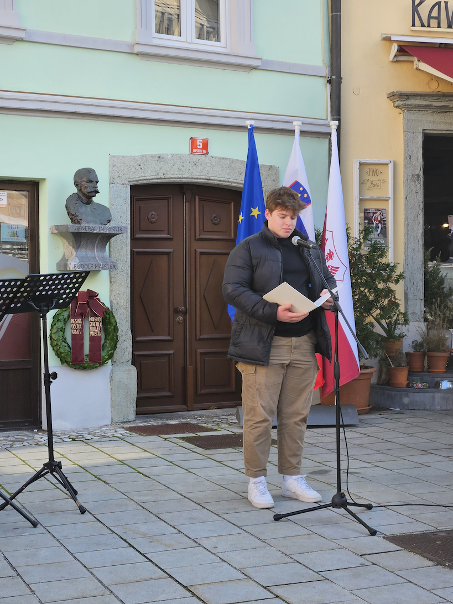 Dijak Martin Černe je recitiral Maistrovo pesem »Naprej«.
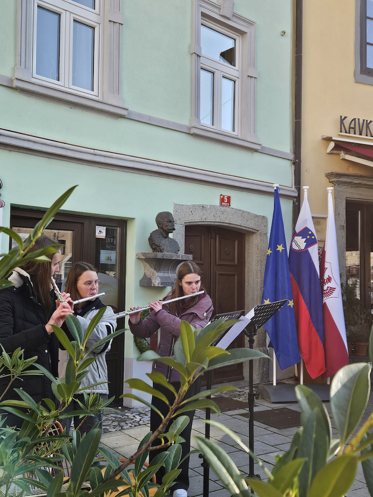 Trio flavt, ki so ga sestavljale dijakinje Rebeka Pavlin, Špela Šimnic in Marcela Oblak, je zaigral skladbo Barta Bakkerja z naslovom »Buenos dias muchachas«.
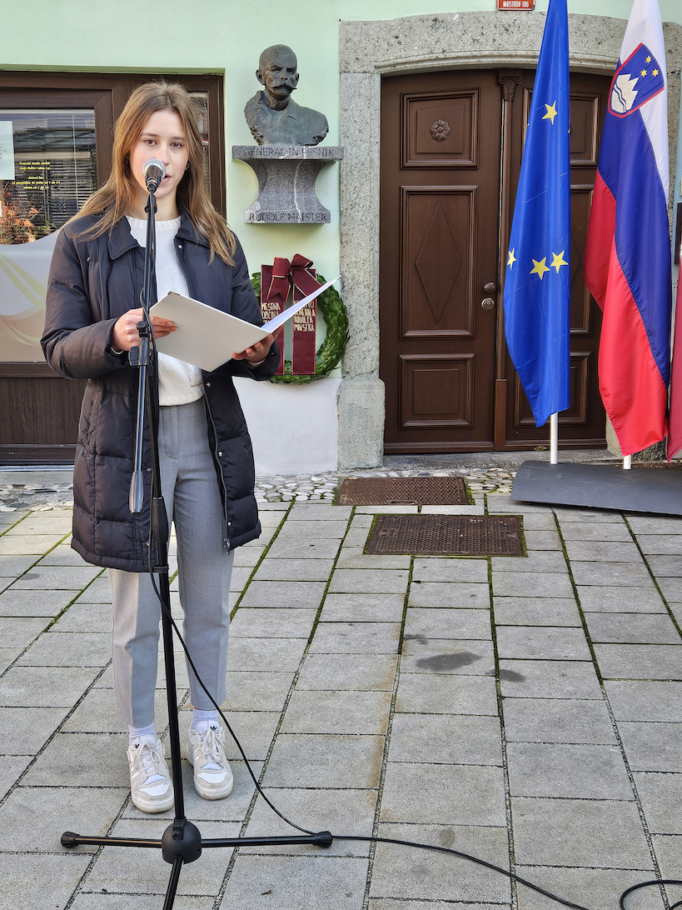 Dijakinja Sara Andrejc je recitirala Maistrovo pesem »Mati«.
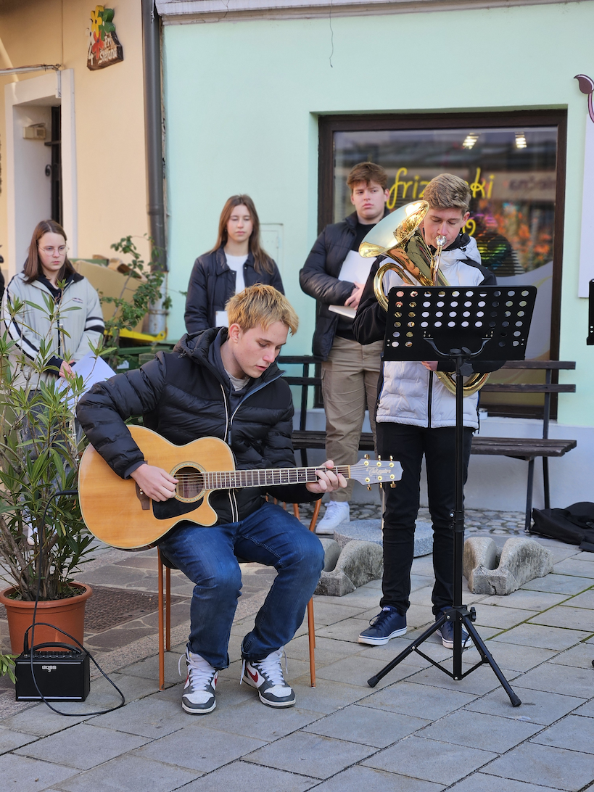 Robežnikovo skladbo »Orion« v priredbi Jožeta Privška sta zaigrala dijaka Jure Osterman na evfoniju in Jaša Luštrek na kitari.

»ČE V ONEM ČASU NE BILO BI NAS, ŠE VEČJI KOS SLOVENSKE ZEMLJE BI ODTRGAL TUJI PLAZ«
Ohranjajmo spoštljiv spomin na generala Rudolfa Maistra in prostovoljce borce za severno mejo!